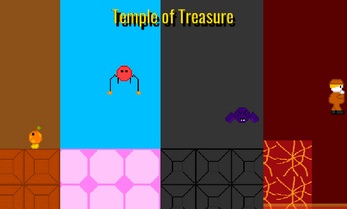
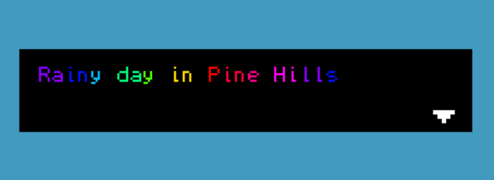

Temple of Treasure | CISC 298 Project I & CISC 498 Project II• Project developed over the course of two semesters January 2021 to April 2021 and January 2022 to April 2022. |
 |
Multipong | CISC 400 Computer Graphics• Project developed in one week in December 2022. |
|
Rainy Day in Pine Hills | IMED 245 Intro to Game Design Fundamentals• Project developed in one day in March 2023. |
 |